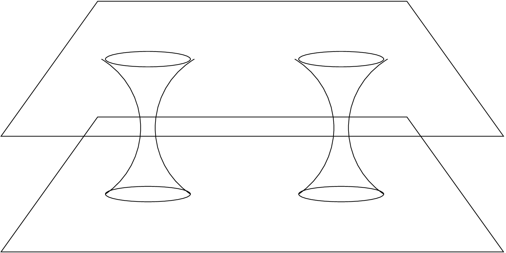

The IDAnalyticBH thorn contains a number of initial data sets for black-hole evolutions which can be specified analytically as metric and extrinsic curvature components. The initial data which is included in this thorn include single Schwarzschild and Kerr black holes, and multiple black hole Misner and Brill-Lindquist solutions.
The IDAnalyticBH thorn exists as a central location to place any initial dataset for black hole evolution that can be specified analytically in terms of the metric, \(g_{ab}\), and extrinsic curvature, \(K_{ab}\).
The thorn extends the admbase::initial_data parameter by adding the following datasets:
Schwarzschild, in isotropic coordinates;
Kerr, in Boyer-Lindquist coordinates;
2 Misner black holes;
\(N \ge 2\) Misner black holes; (Alas this code is currently broken; see the level 1 CCTK_VWarn() warning in
src/Misner_points.c, function Misner_init().)
Multiple Brill-Lindquist black holes.
Initial data for lapse and shift can also be specified in this thorn.
The Cactus grid-functions corresponding to the initial data are inherited from the thorn CactusEinstein/ADMBase,
along with the conformal factor grid-function, psi from CactusEinstein/StaticConformal, and its
derivatives which are optionally set based on the value of the parameters admbase::metric_type and
staticconformal::conformal_storage.
The IDAnalyticBH has been written and augmented over an number of years by many Cactus authors. These include John Baker, Steve Brandt, Carsten Gundlach, Joan Masso, Ed Seidel, Jonathan Thornburg, and Paul Walker. The following sections describe each of the initial datasets and their associated parameters in turn.
The Schwarzschild metric corresponds to a single, static, black hole. If the Cactus metric is specified as a conformal metric (by setting admbase::metric_type="yes"), then the metric is set using isotropic coordinates [1]: \begin {equation} ds^2 = -\left (\frac {2r - M}{2r + M}\right )^2 + \left (1 + \frac {M}{2r}\right )^4 \left (dr^2 + r^2(d\theta ^2 + \sin ^2\theta d\phi ^2)\right ), \end {equation} with the Schwarzschild mass given by the single free parameter \(M\). Thus, the three metric and extrinsic curvature have the values:
The mass is specified using the parameter idanalyticbh::mass. The black hole is assumed to reside at the
origin of the grid, corresponding to the location \(x=y=z=0\).
If the admbase::metric_type parameter has been set to static conformal, then the metric grid-functions (admbase::gxx, \(\ldots \), admbase::gzz) are given as \(\delta _{ab}\), and the conformal factor staticconformal::psi is set to the value specified above. The derivatives of the conformal factor (staticconformal::psix, etc.) are determined analytically.
In order to give the lapse an initial profile which corresponds to isotropic lapse of the \(4\)-metric specified above, use the parameter
admbase::initial_lapse = "schwarz"
This will cause the admbase::alp grid-function to be initialised to the value: \begin {equation} \alpha = \frac {2r - M}{2r + M}. \end {equation}
Note that the Schwarzschild data has the following non-standard behaviour in response to the admbase::metric_type parameter. If the physical metric is requested (ie. metric_type is set to "physical") then a different form of the Schwarzschild metric is set: Schwarzschild coordinates are set instead of the isotropic coordinates: \begin {equation} g_{xx} = g_{yy} = g_{zz} = 1 + 2M/r. \end {equation}
In order to carry out an evolution of a single Schwarzschild black hole of mass \(m=1\), using an initial lapse of \(\alpha =1\), you could modify your parameter file as follows:
ActiveThorns = "... ADMBase StaticConformal IDAnalyticBH ..." admbase::metric_type = "static conformal" admbase::initial_data = "schwarzschild" admbase::initial_lapse = "one" # or "schwarz" for isotropic lapse idanalyticbh::mass = 1.0
Kerr initial data for an isolated rotating black hole is specified using the “quasi-isotropic” coordinates [2]: \begin {equation} ds^2 = \psi ^4 (dr^2 + r^2(d\theta ^2 + \chi ^2\sin ^2\theta d\phi ^2)), \end {equation} where
The two free parameters are the Kerr mass, \(M\), and angular momentum, \(a\) (assumed to be aligned with the z-axis). These are specified using the parameters idanalyticbh::mass and idanalyticbh::a_kerr respectively. (Note that the default values for these parameters are \(M=2\) and \(a=0.1\).) The black hole is assumed to reside at the centre of the coordinate system, at \(x=y=z=0\).
The admbase::metric_type parameter can be used to specify whether the metric should be conformal or not. If the metric is conformal, then \(\psi \) is initialised as a separate grid function, and it’s first and second derivatives are calculated analytically and also stored as grid functions. Otherwise, the conformal factor is multiplied through in the expression for the 3-metric before the values of the admbase::metric variables are set. The extrinsic curvature is also determined analytically.
The gauge can be set to the Kerr lapse and shift with the parameters
idanalyticbh::initial_lapse = "kerr" idanalyticbh::initial_shift = "kerr"
in which case the formulas
where \begin {equation} \sqrt {\Delta } = r - \frac {m^2 - a^2}{4r}. \end {equation}
A set of parameters which initialise an evolution to use the Kerr intial data with mass \(M=1\) and angular momentum \(a=0.3\) are:
ActiveThorns = "... ADMBase StaticConformal IDAnalyticBH ..." admbase::metric_type = "static conformal" admbase::initial_data = "kerr" admbase::initial_lapse = "kerr" admbase::initial_shift = "kerr" idanalyticbh::mass = 1.0 idanalyticbh::a_kerr = 0.3
The earliest suggestion for initial data that might be said to corresponding to multiple black holes was given by Misner in 1960 [3]. He provided a prescription for writing a metric connecting a pair of massive bodies, instaneously at rest, whose throats are connected by a wormhole. Using the method of images, this solution was generalised to describe any number of black holes whose throats connect two identical asymptotically flat spacetimes [4].

Two implementations of the Misner data are available. The first of these, “misner_bh”, is due to Joan Masso, Ed Seidel and Karen Camarda, and implements the original two-throat solution. The more general solution was implemented by Steve Brandt and Carsten Gundlach, and is available as “multiple_misner_bh”.
The misner_bh initial data generates a metric of the form \begin {equation} ds^2 = -dt^2 + \psi ^4 (dx^2 + dy^2 + dz^2), \end {equation} where the conformal factor \(\psi \) is given by \begin {equation} \psi = \sum ^N_{n=-N} \frac {1}{\sinh (\mu _0 n)} \frac {1}{\sqrt {x^2 + y^2 + (z + \coth (\mu _0 n))^2}}. \end {equation} The extrinsic curvature for the Misner data is zero.
The parameter \(\mu _0\) is a measure of the ratio of mass to separation of the throats, and is set using the parameter idanalyticbh::mu. For values less than \(\mu \simeq 1.8\), the throats will have a single event horizon.
The summation limit \(N\) can be set using the parameter idanalyticbh::nmax. Ideally, it should tend to infinity, but in practice the default value of \(N=30\) works well enough for the applications that have been tested. The misner_nbh parameter is only used for the multiple_misner_bh multi-throat data, and will be ignored for the misner_bh initial data, which assumes two throats.
For the given metric, the ADM mass of the system is determined via \begin {equation} m = 4 \sum ^N_{n=1} \frac {1}{\sinh (\mu _0 n)}. \end {equation} This quantity is determined automatically and written to standard output.
If the conformal form of the metric is used (via the admbase::metric_type parameter), then derivatives of the conformal factor are computed analytically from the derivatives of the above expression for \(\psi \).
To make use of the two black hole initial data, a variation of the following set of parameters can be used:
ActiveThorns = "... ADMBase StaticConformal IDAnalyticBH ..." admbase::metric_type = "static conformal" admbase::initial_data = "misner_bh" idanalyticbh::mu = 2.2
The generalisation of the above form of data to multiple black holes is available as the multiple_misner_bh initial data set. The conformal factor is determined by recursively applying a Misner isometry condition to each of the black holes relative to the others.
The black holes are arranged at equal-spaced angles on a circle around the origin in the \(xy\)-plane. The radius of the circle is \(\coth \mu _0\), where \(\mu _0\) is given by the idanalyticbh::mu parameter, and the first black hole lies on the \(x\)-axis (as in Figure 5).
The number of throats is given by the parameter idanalyticbh::misner_nbh, which defaults to 1 and has a hard-coded upper limit of 10. The number of terms used in the Misner expansion is controlled by the parameter idanalyticbh::nmax, which has a default value of 30.
For this version of the Misner data, derivatives of the conformal factor \(\psi \) are determined numerically by finite differencing, using values of \(\psi \) calculated at small distances from the point at which the derivative is to be evaluated. The size of the numerical stencil is hardcoded at \(dx=10^-6\).
As an example, a parameter file implementing 3 Misner black holes on a circle of radius \(\cosh 4\) would use the following parameters:
ActiveThorns = "... ADMBase StaticConformal IDAnalyticBH ..." admbase::metric_type = "static conformal" admbase::initial_data = "multiple_misner_bh" idanalyticbh::misner_nbh = 3 idanalyticbh::mu = 4
The Brill-Lindquist initial data is an alternate form of multi-throat data which differs from the Misner data mainly in its choice of spacetime topology. Whereas the Misner data presumes that the throats connect a pair of asymptotically flat spacetimes which are identical to each other, the Brill-Lindquist data connects each throat to a separate asymptotically flat region [5].
The form of the conformal factor is: \begin {equation} \psi = 1 + \sum _{i=1}^N \frac {m_i}{2r_i}, \end {equation} where the \(m_i\) and \(r_i\) are the masses and positions of the \(i\) particles.
The parameter specifying the number of black holes is idanalyticbh::bl_nbh. A maximum of four black holes can be specified. The mass and \((x,y,z)\) position of the first black hole is given by bl_M_1, bl_x0_1, bl_y0_1, bl_z0_1, with corresponding parameters for the second to fourth black holes. Note that the default values for each of the position coordinates are \(0.0\), so that only the coordinates off of the axes must be specified.
If the conformal metric is used, then derivatives of the conformal factor are calculated from the analytic derivatives of the above expression for the conformal factor.
To initialise a run with a pair of Brill-Lindquist black holes with masses \(1\) and \(2\) and located at \(\pm 1\) on the \(y\)-axis, a set of parameters such as the following could be used:
ActiveThorns = "... ADMBase StaticConformal IDAnalyticBH ..." admbase::metric_type = "static conformal" admbase::initial_data = "bl_bh" idanalyticbh::bl_nbh = 2 idanalyticbh::bl_M_1 = 1.0 idanalyticbh::bl_y0_1 = 1.0 idanalyticbh::bl_M_2 = 2.0 idanalyticbh::bl_y0_2 = -1.0
[1] See, for instance, p. 840 of: Misner, C. W., Thorne, K. S., and Wheeler, J. A. (1973) Gravitation, W. H. Freeman, San Francisco.
[2] Brandt, Steven R. and Seidel, Edward (1996) Evolution of distorted rotating black holes. III. Initial data, Phys. Rev., D54, 1403–1416.
[3] Misner, Charles W. (1960) Wormhole Initial Conditions, Phys. Rev., 118, 1110–1111.
[4] Misner, Charles W. (1963) The Method of Images in Geometrostatics, Ann. Phys., 24, 102–117.
[5] Brill, Dieter R., and Lindquist, Richard W. (1963) Interaction Energy in Geometrostatics Phys. Rev., 131, 471–476.
| a_kerr | Scope: private | REAL |
| Description: Angular momentum parameter of black hole
| ||
| Range | Default: 0.1 | |
| -1:1 | Between +1 and -1
| |
| bl_m_1 | Scope: private | REAL |
| Description: Mass of 1st BL hole
| ||
| Range | Default: 1.0 | |
| : | Anything
| |
| bl_m_2 | Scope: private | REAL |
| Description: Mass of 2nd BL hole
| ||
| Range | Default: 1.0 | |
| : | Anything
| |
| bl_m_3 | Scope: private | REAL |
| Description: Mass of 3rd BL hole
| ||
| Range | Default: 1.0 | |
| : | Anything
| |
| bl_m_4 | Scope: private | REAL |
| Description: Mass of 4th BL hole
| ||
| Range | Default: 1.0 | |
| : | Anything
| |
| bl_nbh | Scope: private | INT |
| Description: Number of Brill Lindquist black holes
| ||
| Range | Default: 1 | |
| 1:4 | Between one and four holes implemented
| |
| bl_x0_1 | Scope: private | REAL |
| Description: x-position of 1st BL hole
| ||
| Range | Default: 0.0 | |
| : | Anything
| |
| bl_x0_2 | Scope: private | REAL |
| Description: x-position of 2nd BL hole
| ||
| Range | Default: 0.0 | |
| : | Anything
| |
| bl_x0_3 | Scope: private | REAL |
| Description: x-position of 3nd BL hole
| ||
| Range | Default: 0.0 | |
| : | Anything
| |
| bl_x0_4 | Scope: private | REAL |
| Description: x-position of 4th BL hole
| ||
| Range | Default: 0.0 | |
| : | Anything
| |
| bl_y0_1 | Scope: private | REAL |
| Description: y-position of 1st BL hole
| ||
| Range | Default: 0.0 | |
| : | Anything
| |
| bl_y0_2 | Scope: private | REAL |
| Description: y-position of 2nd BL hole
| ||
| Range | Default: 0.0 | |
| : | Anything
| |
| bl_y0_3 | Scope: private | REAL |
| Description: y-position of 3nd BL hole
| ||
| Range | Default: 0.0 | |
| : | Anything
| |
| bl_y0_4 | Scope: private | REAL |
| Description: y-position of 4th BL hole
| ||
| Range | Default: 0.0 | |
| : | Anything
| |
| bl_z0_1 | Scope: private | REAL |
| Description: z-position of 1st BL hole
| ||
| Range | Default: 0.0 | |
| : | Anything
| |
| bl_z0_2 | Scope: private | REAL |
| Description: z-position of 2nd BL hole
| ||
| Range | Default: 0.0 | |
| : | Anything
| |
| bl_z0_3 | Scope: private | REAL |
| Description: z-position of 3nd BL hole
| ||
| Range | Default: 0.0 | |
| : | Anything
| |
| bl_z0_4 | Scope: private | REAL |
| Description: z-position of 4th BL hole
| ||
| Range | Default: 0.0 | |
| : | Anything
| |
| epsilon | Scope: private | REAL |
| Description: Fudge factor
| ||
| Range | Default: 1.e-16 | |
| 0.0:* | ||
| mass | Scope: private | REAL |
| Description: Mass of black hole
| ||
| Range | Default: 2.0 | |
| : | Not sure if it can be negative or not
| |
| misner_nbh | Scope: private | INT |
| Description: Number of Misner black holes
| ||
| Range | Default: 1 | |
| 1:10 | Not more than 10
| |
| mu | Scope: private | REAL |
| Description: Misner mu value
| ||
| Range | Default: 1.2 | |
| 0: | Non-negative
| |
| nmax | Scope: private | INT |
| Description: Number of terms to include for Misner series
| ||
| Range | Default: 30 | |
| 0: | Non-negative
| |
| conformal_storage | Scope: shared from STATICCONFORMAL | KEYWORD |
Implements:
idanalyticbh
Inherits:
admbase
staticconformal
grid
This section lists all the variables which are assigned storage by thorn EinsteinInitialData/IDAnalyticBH. Storage can either last for the duration of the run (Always means that if this thorn is activated storage will be assigned, Conditional means that if this thorn is activated storage will be assigned for the duration of the run if some condition is met), or can be turned on for the duration of a schedule function.
NONE
CCTK_PARAMCHECK (conditional)
idanalyticbh_paramchecker
construct parameters for analytic black hole solutions
| Language: | c | |
| Options: | global | |
| Type: | function | |
ADMBase_InitialData (conditional)
schwarzschild
construct initial data for a single schwarzschild black hole
| Language: | c | |
| Reads: | grid::coordinates | |
| Storage: | confac[1] | |
| Type: | function | |
| Writes: | staticconformal::conformal_state(everywhere) | |
| staticconformal::psi(everywhere) | ||
| staticconformal::confac_1derivs(everywhere) | ||
| staticconformal::confac_2derivs(everywhere) | ||
| admbase::metric(everywhere) | ||
| admbase::alp(everywhere) | ||
| admbase::curv(everywhere) | ||
ADMBase_InitialData (conditional)
kerrid
construct initial data for a single kerr black hole
| Language: | c | |
| Reads: | grid::x | |
| grid::y | ||
| grid::z | ||
| Storage: | confac[1] | |
| Type: | function | |
| Writes: | staticconformal::conformal_state(everywhere) | |
| staticconformal::psi(everywhere) | ||
| staticconformal::confac_1derivs(everywhere) | ||
| staticconformal::confac_2derivs(everywhere) | ||
| admbase::metric(everywhere) | ||
| admbase::alp(everywhere) | ||
| admbase::curv(everywhere) | ||
| admbase::shift(everywhere) | ||
ADMBase_InitialData (conditional)
brilllindquist
construct initial data for brill lindquist black holes
| Language: | c | |
| Reads: | grid::x | |
| grid::y | ||
| grid::z | ||
| Storage: | confac[1] | |
| Type: | function | |
| Writes: | staticconformal::conformal_state(everywhere) | |
| staticconformal::psi(everywhere) | ||
| staticconformal::confac_1derivs(everywhere) | ||
| staticconformal::confac_2derivs(everywhere) | ||
| admbase::metric(everywhere) | ||
| admbase::curv(everywhere) | ||
ADMBase_InitialData (conditional)
misner_standard
construct initial data for two misner black holes
| Language: | c | |
| Reads: | grid::x | |
| grid::y | ||
| grid::z | ||
| Storage: | confac[1] | |
| Type: | function | |
| Writes: | staticconformal::conformal_state(everywhere) | |
| staticconformal::psi(everywhere) | ||
| staticconformal::confac_1derivs(everywhere) | ||
| staticconformal::confac_2derivs(everywhere) | ||
| admbase::metric(everywhere) | ||
| admbase::curv(everywhere) | ||
| admbase::alp(everywhere) | ||
ADMBase_InitialData (conditional)
misner_multiple
construct initial data for multiple misner black holes
| Language: | c | |
| Reads: | grid::x | |
| grid::y | ||
| grid::z | ||
| Storage: | confac[1] | |
| Type: | function | |
| Writes: | staticconformal::conformal_state(everywhere) | |
| staticconformal::psi(everywhere) | ||
| staticconformal::confac_1derivs(everywhere) | ||
| staticconformal::confac_2derivs(everywhere) | ||
| admbase::metric(everywhere) | ||
| admbase::curv(everywhere) | ||